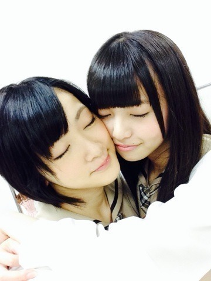
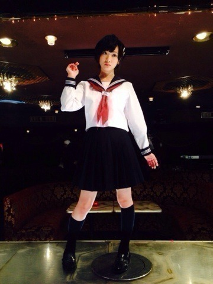

| 2013/11 04 Mon | 生駒里奈 ロックの学園ヽ(・ ∀・)ﾉ |
こんばんは〜ヽ(・∀・)ノ
生駒ちゃんです！
昨日は東京工芸大学にてロックの学園2013に出演しました！
来てくださった皆さんありがとうございました！
アイドルとロックってあんまり共通点とかないよな〜って最初は思ってたけど
その曲ひとつひとつに物語があって気持ちがあってなんだが分からないけどうわー！
ってなるのは共通してるのかなって思いました。
アイドルのロックな部分
いつもは見れないかも知れないけど皆さん見つけてくれたかな？
みんな愛しあってるかい？
忌野清志郎さんの言葉を言わせて頂きました。
かっこいいよな〜
他人かも知れないけど、その場に、同じ空間にいる時だけでも愛し合うのはできるのかもしれない。
ちょっとそんな風に考えてみました。
今年は沢山のフェスに出させて頂いて学ぶ事が山の様にありました。
それがこんなにも楽しいなんて！
体験させてくださった皆さん本当にありがとうございました！
もし次の機会があったら絶対にレベル上がってると思ってもらえるようにしたいな！
年末の武道館待ってろよっ☆
そして今日は林野庁の木材利用PR大使の任務を果たしてきました！
皆さんに少しでも木材利用の事を知って頂きたい！
環境を守るのも大切だけど、木を使うことで日本の森は豊かになるんです！
詳しい事は調べてみてくださいっ！
木を使いましょう！

あしゅりんの顔が小さすぎてヽ(・∀・)ﾉ
前々回のブログ質問答えて下さってありがとうございました！
やっぱり都心は雪は交通の便が〜という意見が多かった！
でも皆さん雪好きだよね〜ヽ(・∀・)ノ
生駒ちゃん雪ん子だから雪降らしちゃうかもよっ！
ふーって吹けば雪降らしちゃうよっ！
てへっ☆
あとね今日お仕事終わりに原宿久しぶりに行ったんだけどもうねっ！
やはり原宿は素敵な所ですっ！
雨降って来ちゃったけど(´；Д；｀)
タピオカも飲んだんだよ〜
また行こうっと！

バレッタの撮影中！
生駒里奈マネキンになる。
んっ？
なに欲しいの？
欲しいの〜？
高いよ（笑）
質問！
皆さんは羽毛布団派？
それとも普通のかけ布団派？
生駒ちゃんは羽毛のふわふわより体にフィットする普通の布団がすき〜ヽ(・∀・)ノ
布団に入って最初は寒いけどだんだんぬくぬくして行くのが好きっ！
質問返し待ってまーす！
へばなっ！☆